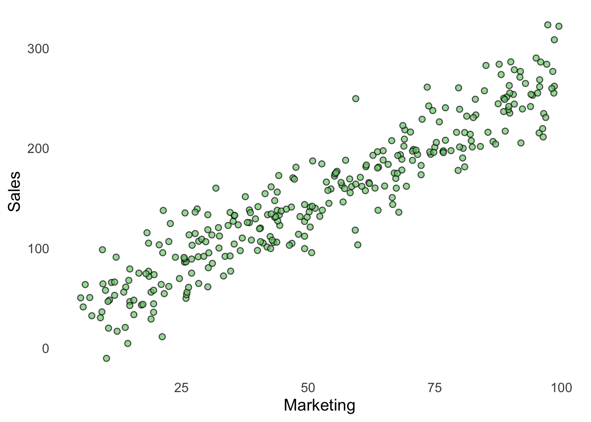
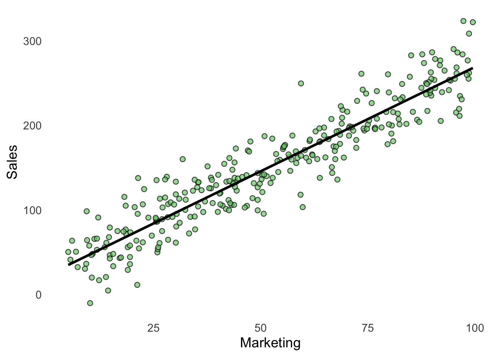
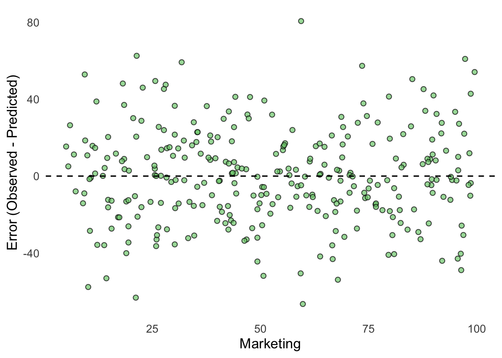

# Clear Environment
rm(list = ls())
# Load packages
library(tidyverse)
source("Functions/EDA_functions.R")
source("Functions/linear_regression_functions.R")11 Linear Regression: Lab 1
Introduction to Supervised Learning and Prediction
11.1 Introduction
In the previous labs, we worked with k-means clustering. K-means is an unsupervised learning method. There is no outcome variable that the model is trying to predict. Instead, the algorithm searches for patterns in the data and groups similar observations together.
We now move to supervised learning. In supervised learning, we have an outcome variable that we want to explain or predict using one or more predictor variables.
In this lab, we will introduce a basic modeling workflow for supervised learning. This workflow differs somewhat from the workflow we used in the previous lab, where we worked with unsupervised learning. We will work with the following overarching steps:
- identify the outcome and predictor variables
- split the data into training and test data
- fit different models using the training data
- compare how well the models fit the training data
- select a model
- use the selected model to make predictions on the test data
- evaluate the model’s predictive performance using the test data
We will begin this workflow using linear regression. In chapter 12 and 13 we will use a similar workflow but with logistic regression.
11.1.1 Learning objectives
After completing this lab, you should be able to:
- distinguish between outcome and predictor variables
- explain the basic idea behind linear regression
- fit a simple linear regression model in R
- interpret the intercept and slope
- calculate predicted values
- understand the difference between observed and predicted values
- calculate prediction errors
- explain why we separate training, and test data
11.1.2 Prepare the R session
We begin by clearing the Environment and loading the packages used in the lab.
11.1.3 Import the data
In this lab, imagine that we work for a company that wants to understand and predict sales. The company has collected information about its marketing activities. Lets import some data.
# Import the data
df <- read.csv("Data/regression_data.csv")Take a first look at the data.
head(df) marketing sales
1 32.3 120.5
2 79.9 238.9
3 43.9 137.9
4 88.9 217.0
5 94.3 252.9
6 9.3 36.3Inspect the descriptive statistics.
summary(df) marketing sales
Min. : 5.10 Min. :-10.2
1st Qu.:29.70 1st Qu.:100.9
Median :50.55 Median :144.2
Mean :52.46 Mean :151.7
3rd Qu.:74.65 3rd Qu.:201.2
Max. :99.50 Max. :323.3 11.1.3.1 Questions
- How many observations are in the dataset?
- Which variables are included?
- Which variable do you think we should try to predict?
- Which variable could be used to predict it?
- Do you find anything in the data that might be problematic?
11.1.4 Outcome and predictor variables
In supervised learning, we distinguish between outcome variables and predictor variables.
- The outcome variable is the variable we want to explain or predict.
- The predictor variable contains information that we use to make that prediction.
Suppose we want to predict sales using marketing. In this case:
salesis the outcome variable;marketingis the predictor variable.
We can write this relationship as:
\[ Sales = f(Marketing) \]
This simply means that we are interested in whether information about marketing can help us understand or predict sales.
11.1.5 Explore the relationship
Before fitting a model, we should always explore the data. Because both variables are quantitative, a scatter plot is useful.
scatterplot(
df,
marketing,
sales,
xlab = "Marketing",
ylab = "Sales"
)
11.1.5.1 Questions
- Does there appear to be a relationship between marketing and sales?
- Is the relationship positive or negative?
- Does the relationship appear approximately linear?
11.1.6 The linear regression model
Linear regression describes the relationship between an outcome variable and one or more predictor variables using a line. For a simple linear regression with one predictor, the fitted model can be written as:
\[ \hat{y} = b_0 + b_1x \]
where:
- \(\hat{y}\) is the predicted value of the outcome
- \(b_0\) is the intercept
- \(b_1\) is the slope
- \(x\) is the predictor variable
For our example:
\[ \widehat{Sales} = b_0 + b_1 Marketing \]
The model tries to find the line that best represents the relationship between marketing and sales. The position and slope of this line are determined by two coefficients, \(b_0\) and \(b_1\), which are estimated from the data. Together, these coefficients define the best-fitting line—the line that minimizes the squared differences between the observed sales values and the values predicted by the model.
11.1.7 Fit the model
We use the lm() function to estimate a linear regression model.
model <- lm(
sales ~ marketing,
data = df
)View the estimated coefficients.
coef(model)(Intercept) marketing
22.343915 2.466575 You can also inspect a more detailed model summary.
summary(model)
Call:
lm(formula = sales ~ marketing, data = df)
Residuals:
Min 1Q Median 3Q Max
-66.545 -15.998 -0.374 15.599 80.642
Coefficients:
Estimate Std. Error t value Pr(>|t|)
(Intercept) 22.34392 3.15674 7.078 1.05e-11 ***
marketing 2.46657 0.05366 45.966 < 2e-16 ***
---
Signif. codes: 0 '***' 0.001 '**' 0.01 '*' 0.05 '.' 0.1 ' ' 1
Residual standard error: 24.74 on 298 degrees of freedom
Multiple R-squared: 0.8764, Adjusted R-squared: 0.876
F-statistic: 2113 on 1 and 298 DF, p-value: < 2.2e-1611.1.7.1 Questions
- What is the estimated intercept?
- What is the estimated slope for
marketing? - Is the slope positive or negative?
- What does the slope tell us about the relationship between marketing and sales?
11.1.8 Interpret the model
Suppose the estimated model is:
\[ \widehat{Sales} = 20 + 2.5 \times Marketing \]
The intercept of 20 means that the model predicts sales of 20 when marketing is 0. The slope of 2.5 means that a one-unit increase in marketing is associated with an increase of 2.5 units in predicted sales.
11.1.8.1 Question
- Using the coefficients from your own model, write the estimated regression equation.
11.1.9 Add the regression line
We can add the fitted regression line to the scatter plot.
plot_regression_line(
data = df,
model = model,
xvar = marketing,
yvar = sales,
xlab = "Marketing",
ylab = "Sales"
)
11.1.9.1 Questions
- Does the regression line appear to represent the relationship reasonably well?
- Are all observations located exactly on the line?
- Why do you think observations differ from the regression line?
11.1.10 Make predictions
Once we have fitted a model, we can use it to make predictions. Suppose marketing is equal to 30.
new_customer <- data.frame(
marketing = 30
)
predict(
model,
newdata = new_customer
) 1
96.34116 11.1.10.1 Questions
- What sales value does the model predict when marketing is: 30, 35, 55?
- Use your regression equation to calculate the same prediction by hand.
11.1.11 Predicted values for all observations
We can also calculate a prediction for every observation in the dataset.
df$predicted_sales <- predict(model)Inspect the results.
head(df) marketing sales predicted_sales
1 32.3 120.5 102.01428
2 79.9 238.9 219.42323
3 43.9 137.9 130.62654
4 88.9 217.0 241.62240
5 94.3 252.9 254.94191
6 9.3 36.3 45.28306We now have:
- the observed value:
sales; - the model’s prediction:
predicted_sales.
11.1.12 Prediction error
A model will normally not predict every observation perfectly. The difference between the observed value and the predicted value is called a residual or prediction error.
\[ Error = Observed - Predicted \]
Calculate the errors.
df <- df |>
mutate(
error = sales - predicted_sales
)Inspect the results.
head(df) marketing sales predicted_sales error
1 32.3 120.5 102.01428 18.485723
2 79.9 238.9 219.42323 19.476769
3 43.9 137.9 130.62654 7.273457
4 88.9 217.0 241.62240 -24.622404
5 94.3 252.9 254.94191 -2.041907
6 9.3 36.3 45.28306 -8.983060We can plot errors with a residual plot:
# Plot the prediction errors
plot_residuals(
data = df,
xvar = marketing,
errorvar = error,
xlab = "Marketing"
)
Each point shows the prediction error for one observation. The dashed horizontal line represents an error of zero, meaning that the prediction was exactly correct.
- Points above zero are observations where the model predicted too little.
- Points below zero are observations where the model predicted too much.
- Points close to zero represent relatively accurate predictions.
11.1.12.1 Questions
- Are the errors generally centered around zero?
- Are there observations with particularly large errors?
- Do you see any systematic pattern in the errors?
- Find an observation with a positive error. What does a positive error mean?
- Find an observation with a negative error. What does a negative error mean?
- Would a perfect model have large or small errors?
11.1.13 Measure prediction error
To evaluate a model, we need to summarize its prediction errors. A common measures is Mean Absolute Error (MAE). MAE calculates the average absolute difference between observed and predicted values. RMSE also measures prediction errors, but gives greater weight to large errors because the errors are squared before they are averaged. In this lab we will mostly focus on MAE.
For both measures, lower values indicate better predictive performance. Ideally, we want MAE and RMSE to be as small as possible. A value of zero would mean that the model predicts every observation perfectly.
However, a very low prediction error does not necessarily mean that we have a good model. What matters is where we evaluate the model. A model can achieve very low MAE and RMSE on the data used to train it simply because it has learned that particular dataset very well. If the model fits the training data too closely, it may perform poorly when predicting new observations. This is called overfitting.
The opposite problem is underfitting. This occurs when the model is too simple to capture important patterns in the data, resulting in relatively large prediction errors on both the training data and new data.
Our goal is therefore not simply to minimize prediction error on the training data. We want to build a model that generalizes well to new, unseen data. We will return to overfitting, underfitting, and how to evaluate models using separate datasets later in a few sections.
mae <- mean(
abs(df$error)
)
mae[1] 19.37259The Root Mean Squared Error (RMSE).
rmse <- sqrt(
mean(df$error^2)
)
rmse[1] 24.6536611.1.13.1 Questions
- What is the MAE of the model?
- What is the RMSE?
- Would you prefer a model with a smaller or larger prediction error?
11.1.14 Training and test data
So far, we have fitted and evaluated the model using the same data. This creates a problem. The real purpose of a predictive model is usually to make predictions for new observations that the model has not seen before.
We therefore divide the data into two parts:
- training data — used to fit and develop models;
- test data — used to evaluate how well the model predicts new, unseen observations.
Why do we need test data?
A model is fitted using the training data and will therefore tend to perform well on those observations. However, good performance on the training data does not necessarily mean that the model will perform equally well on new data.
The test data contain observations that were not used to fit the model. They therefore allow us to evaluate how well the model generalizes to new observations.
In this lab, we will use:
- 70% training data;
- 30% test data.
11.1.15 Create training and test data
We use our split_data() function to randomly divide the observations into training and test data.
data_split <- split_data(
df,
train_prop = 0.70,
test_prop = 0.30
)Create two data frames:
train_data <- data_split$train_data
test_data <- data_split$test_data11.1.15.1 Questions
- How many observations are in the training data?
- How many observations are in the test data?
- What is the purpose of the training data?
- What is the purpose of the test data?
- Why is it useful to evaluate a model on observations that were not used to fit it?
11.1.16 Fit the model using training data
We now estimate the model using only the training data.
model_train <- lm(
sales ~ marketing,
data = train_data
)Inspect the model.
summary(model_train)
Call:
lm(formula = sales ~ marketing, data = train_data)
Residuals:
Min 1Q Median 3Q Max
-66.906 -16.849 -0.757 15.605 80.274
Coefficients:
Estimate Std. Error t value Pr(>|t|)
(Intercept) 23.75319 3.80277 6.246 2.33e-09 ***
marketing 2.44904 0.06438 38.038 < 2e-16 ***
---
Signif. codes: 0 '***' 0.001 '**' 0.01 '*' 0.05 '.' 0.1 ' ' 1
Residual standard error: 25.56 on 208 degrees of freedom
Multiple R-squared: 0.8743, Adjusted R-squared: 0.8737
F-statistic: 1447 on 1 and 208 DF, p-value: < 2.2e-1611.1.17 Calculate predictions and errors for the training data
We can first examine how well the model predicts the observations that were used to fit it.
train_data$predicted_sales <- predict(
model_train,
newdata = train_data
)
# Calculate the prediction errors.
train_data <- train_data |>
mutate(
error = sales - predicted_sales
)
# Calculate MAE.
train_mae <- mean(
abs(train_data$error)
)
# Calculate RMSE.
train_rmse <- sqrt(
mean(train_data$error^2)
)
train_mae[1] 19.93176train_rmse[1] 25.4333The training error tells us how well the model fits the observations that were used to estimate it. Lower values of MAE and RMSE indicate that the predictions are closer to the observed values.
However, training performance does not tell us how well the model will predict new observations. For that, we need the test data.
11.1.18 Model comparison using training data
In this first lab, we have fitted only one model. In later labs, however, we will fit and compare several alternative models.
We can examine how well alternative models fit the training data by comparing measures such as MAE and RMSE. A smaller training error means that a model fits the training observations more closely. However, an important principle is that:
Better fit to the training data does not necessarily mean better predictions for new data.
A more flexible model can sometimes fit the training observations extremely well without performing equally well on new observations. We will return to this issue.
Think of the workflow as:
Training data → fit and develop models
Test data → evaluate predictive performance on new observations
11.1.19 Evaluate the model using test data
We now use the fitted model to predict observations in the test data. Importantly, the model is not fitted again using the test data. We use the model that was estimated from the training data.
test_data$predicted_sales <- predict(
model_train,
newdata = test_data
)
# Calculate the test errors.
test_data <- test_data |>
mutate(
error = sales - predicted_sales
)
# Calculate the test MAE.
test_mae <- mean(
abs(test_data$error)
)
# Calculate the test RMSE.
test_rmse <- sqrt(
mean(test_data$error^2)
)
test_mae[1] 18.06098test_rmse[1] 22.76424The test error tells us how well the model predicts observations that were not used when estimating the model. It therefore gives us a better indication of how well the model is likely to perform when making predictions for new observations.
11.1.20 Compare model performance
It is useful to compare the training and test performance side by side.
performance <- data.frame(
Dataset = c(
"Training",
"Test"
),
MAE = c(
train_mae,
test_mae
),
RMSE = c(
train_rmse,
test_rmse
)
)
performance Dataset MAE RMSE
1 Training 19.93176 25.43330
2 Test 18.06098 22.76424The training error tells us how well the model fits the data that were used to estimate it. The test error tells us how well the fitted model predicts new observations that were not used during model fitting.
A useful pattern to look for is whether performance becomes substantially worse when moving from the training data to the test data.
For example, suppose a model has:
- training RMSE = 2.1;
- test RMSE = 2.3.
The model performs similarly on training and test data.
Now suppose another model has:
- training RMSE = 0.5;
- test RMSE = 4.8.
Despite fitting the training data extremely well, the second model performs much worse on new observations. This can be a sign of overfitting, which we will discuss in more detail later.
11.1.20.1 Questions
- What is the training RMSE?
- What is the test RMSE?
- Is the test RMSE higher or lower than the training RMSE?
- What does the difference between training and test performance tell us?
- Which error gives us the best indication of how well the model predicts new observations?
11.1.21 Final Exercise
Imagine that you are presenting your analysis to the company.
Answer the following questions.
- What is the outcome variable in your model?
- What is the predictor variable?
- Describe the relationship between marketing and sales.
- Interpret the estimated slope.
- What is the training RMSE?
- What is the test RMSE?
- How does the test RMSE compare with the training RMSE?
- Why do we evaluate the model on data that were not used to fit it?
- Based on the test performance, do you think marketing contains useful information for predicting sales? Explain briefly.
11 Linear Regression: Lab 1 – FOA235 – Business Analytics 11 Linear Regression: Lab 1 – FOA235 – Business Analytics 11 Linear Regression: Lab 1 – FOA235 – Business Analytics FOA235 – Business Analytics Introduction to Supervised Learning and Prediction Introduction to Supervised Learning and Prediction